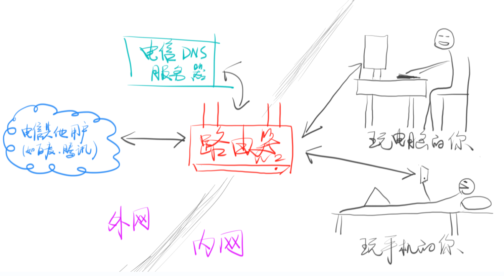

面试的时候顶多会问两个相关问题，去看博客了解一下即可
简答：TCP 可靠、面向连接、相对 UDP 较慢；UDP 不可靠，不面向连接、相对 TCP 较快。搞定。
只要你在互联网中，那么你就会有一个 IP。通俗上理解，IP 分为「内网 IP」 和「外网 IP」，以下图为例

你从电信那里买来带宽，一年一千多。
电信为你提供 DNS 服务。
你买了一个路由器，然后用电脑和手机分别连接路由器广播出来的无线 WIFI。
只要路由器连上电信的服务器，那么路由器就会有一个「外网 IP」，比如「14.17.32.211」就是一个外网 IP。这就是你在互联网中的地址。
但是如果你重启路由器，那么你很有「可能」被重新分配一个「外网 IP」，也就是说 你的路由器没有「固定的外网 IP」
你可以花每年几千块钱租用一个「固定的外网 IP」，但是显然不会这么浪费钱。像腾讯、阿里这样的大公司租用了很多外网 IP，这样才能对我们提供稳定的服务。
但是有个问题，你的路由器的外网 IP 如果是14.17.32.211，那么你的手机和电脑的 IP 又是什么呢？答案是「内网 IP」
路由器会在你家里创建一个内网，内网中的设备使用内网 IP，一般来说这个 IP 的格式都是 192.168.xxx.xxx。
一般路由会给自己分配一个好记的内网 IP，如 192.168.1.1
然后路由会给每一个内网中的设备分配一个不同的内网 IP，如电脑是 192.168.1.2，手机是 192.168.1.3，以此类推。
现在路由器有两个 IP，一个外网 IP（14.17.32.211）和一个内网 IP（192.168.1.1）
内网中的设备可以互相访问（比如你可以用电脑或手机进入 http://192.168.1.1 来查看你的路由器），但是不能直接访问外网，内网设备想要访问外网，就必须经过路由器中转。
外网中的设备可以互相访问（比如 qq.com 可以把首页发送给你的路由器，你的路由器有外网 IP），但是外网中的设备无法访问你的内网设备（这很好理解，内网是一个封闭的网络，外人进不来，所以实际上 qq.com 无法直接把首页放送给你的电脑和手机）
问题来了，那 qq.com 是怎么把首页发送到我的手机上的呢？答案是通过路由器来中转。
路由器接收到 qq.com 的页面后，把页面发送给你的电脑或手机。路由器知道如何给这些信息指路，路由器就是一个指路人，这就是「路由」两个字的来历。
路，就是「必由之路」中的路。由，就是「必由之路」中的由（由是经过、缘由的意思）。所有的信息都要经过路由器，然后被指向一条它该去的路。
也就是说内网和外网就像两个隔绝的空间，无法互通，唯一的联通点就是路由器（因为路由器既有外网 IP 也有内网 IP），所以路由器有时候也被叫做「网关」，这个「关」是「一夫当关，万夫莫开」的「关」。如果路由器到电信的连接中断了，那么内网中所有的设备也就无法上网了。（这很好理解，相当于唯一一条出去的路断了）
除了内网 IP 和外网 IP，还有两个特别特殊的 IP，就是本地 IP：127.0.0.1。本地 IP 永远表示设备自己。不信你可以 ping 127.0.0.1 一下，会发现只需要 0.01 ms 就得到了响应（你 ping qq.com 需要几十毫秒才得到响应）
默认情况下，hosts 文件里会有一行127.0.0.1 localhost，意思就是 localhost 指向 127.0.0.1，所以 localhost 也表示设备自己。不信你 ping localhost 试试，会发现实际上是在 ping 127.0.0.1
还有一个特别特殊的 IP：0.0.0.0，它不表示任何设备。这个 IP 不同的地方含义不同，以后我们会用到，用到的时候再说意思。
你想要访问一个设备（前提是你使用的是 TCP 或 UDP 协议。还记得吗，HTTP 就使用了 TCP），只指定 IP 是不够的，还必须指定端口（Port）。 端口其实就是一个编号，并不是一种硬件。
一个服务器（硬件）不一定只提供一种服务，比如一个服务器既提供 HTTP 服务，又提供 FTP 服务，还提供 SMTP 服务（邮件服务），那么只用一个 IP 是无法告诉服务器你想要使用哪种服务。
所以这里有一个重要的原则：一个端口对应一个服务。
使用 HTTP 协议访问另一个 IP 时，比如同时提供 IP 和端口号，缺一不可。